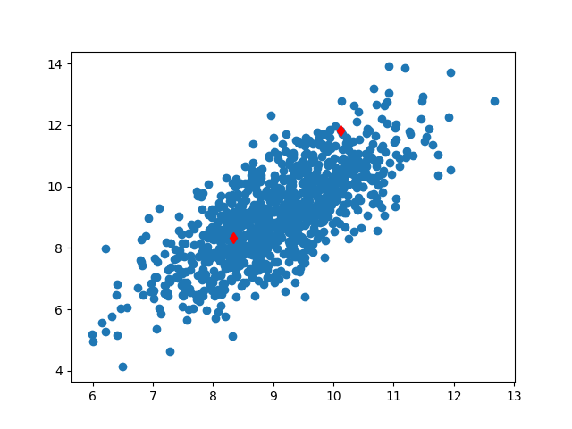
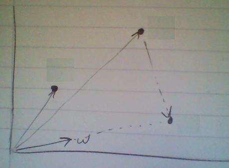
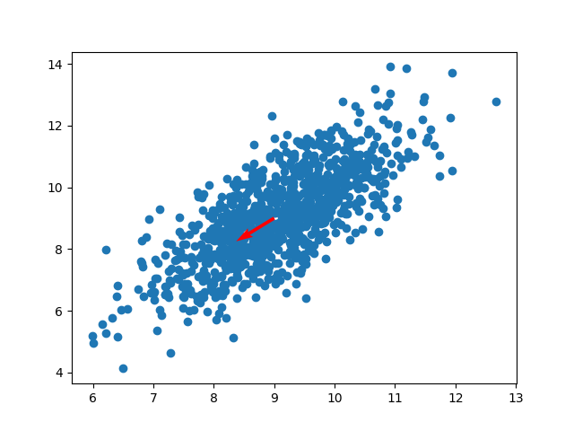
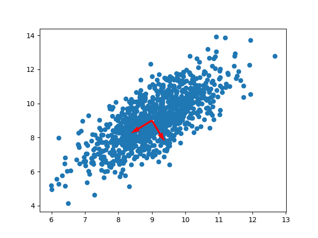
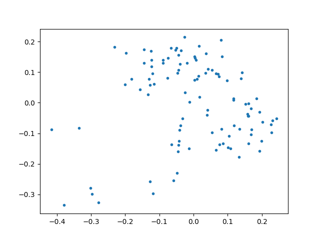
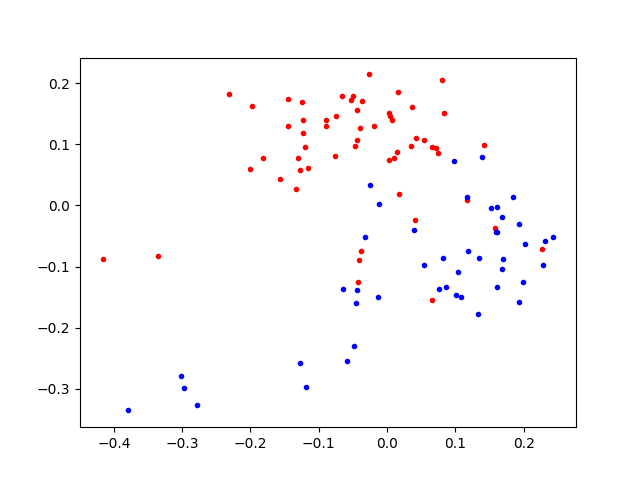

PCA yöntemi boyut azaltan yöntemlerden biri, denetimsiz (unsupervised) işleyebilir. Ana fikir veri noktalarının izdüşümünün yapılacağı yönler bulmaktır ki bu yönler bağlamında (izdüşüm sonrası) noktaların arasındaki sayısal varyans (empirical variance) en fazla olsun, yani noktalar grafik bağlamında düşünürsek en “yayılmış” şekilde bulunsunlar. Böylece birbirinden daha uzaklaşan noktaların mesela daha rahat kümelenebileceğini umabiliriz. Bir diğer amaç, hangi değişkenlerin varyansının daha fazla olduğunun görülmesi üzerine, o değişkenlerin daha önemli olabileceğinin anlaşılması. Örnek olarak alttaki grafiğe bakalım,
from pandas import *
data = read_csv("testSet.txt",sep="\t",header=None)
print (data[:10]) 0 1
0 10.235186 11.321997
1 10.122339 11.810993
2 9.190236 8.904943
3 9.306371 9.847394
4 8.330131 8.340352
5 10.152785 10.123532
6 10.408540 10.821986
7 9.003615 10.039206
8 9.534872 10.096991
9 9.498181 10.825446plt.scatter(data.iloc[:,0],data.iloc[:,1])
plt.plot(data.iloc[1,0],data.iloc[1,1],'rd')
plt.plot(data.iloc[4,0],data.iloc[4,1],'rd')
plt.savefig('pca_1.png')
PCA ile yapmaya çalıştığımız öyle bir yön bulmak ki, \(x\) veri noktalarının tamamının o yöne izdüşümü yapılınca sonuç olacak, “izdüşümü yapılmış” \(z\)’nin varyansı en büyük olsun. Bu bir maksimizasyon problemidir. Fakat ondan önce \(x\) nedir, \(z\) nedir bunlara yakından bakalım.
Veri \(x\) ile tüm veri noktaları kastedilir, fakat PCA probleminde genellikle bir “vektörün diğeri üzerine” yapılan izdüşümü, “daha optimal bir \(w\) yönü bulma”, ve “o yöne doğru izdüşüm yapmak” kelimeleri kullanılır. Demek ki veri noktalarını bir vektör olarak görmeliyiz. Eğer üstte kırmızı ile işaretlenen iki noktayı alırsak (bu noktalar verideki 1. ve 4. sıradaki noktalar),

gibi bir görüntüden bahsediyoruz. Hayali bir \(w\) kullandık, ve noktalardan biri veri noktası, \(w\) üzerine izdüşüm yapılarak yeni bir vektörü / noktayı ortaya çıkartılıyor. Genel olarak ifade edersek, bir nokta için
\[ z_i = x_i^Tw = x_i \cdot w\]
Yapmaya çalıştığımız sayısal varyansı maksimize etmek demiştik. Bu arada verinin hangi dağılımdan geldiğini söylemedik, “her veri noktası birbirinden ayrı, bağımsız ama aynı bir dağılımdandır’’ bile demedik, \(x\) bir rasgele değişkendir beyanı yapmadık (\(x\) veri noktalarını tutan bir şey sadece). Sadece sayısal varyans ile iş yapacağız. Sayısal varyans,
\[ \frac{1}{n}\sum_i (x_i \cdot w)^2 \]
Toplama işlemi yerine şöyle düşünelim, tüm \(x_i\) noktalarını istifleyip bir \(x\) matrisi haline getirelim, o zaman \(xw\) ile bir yansıtma yapabiliriz, bu yansıtma sonucu bir vektördür. Bu tek vektörün karesini almak demek onun devriğini alıp kendisi ile çarpmak demektir, yani
\[ = \frac{1}{n}(xw)^T(xw) = \frac{1}{n} w^Tx^Txw\]
\[ = w^T\frac{x^Tx}{n}w\]
\(x^Tx / n\) sayısal kovaryanstır (empirical covariance). Ona \(\Sigma\) diyelim.
\[ = w^T\Sigma w\]
Üstteki sonuçların boyutları \(1 \times N \cdot N \times N \cdot N \times 1 = 1 \times 1\). Tek boyutlu skalar degerler elde ettik. Yani \(w\) yönündeki izdüşüm bize tek boyutlu bir çizgi verecektir. Bu sonuç aslında çok şaşırtıcı olmasa gerek, tüm veri noktalarını alıp, başlangıcı başnokta 0,0 (origin) noktasında olan vektörlere çevirip aynı yöne işaret edecek şekilde düzenliyoruz, bu vektörleri tekrar nokta olarak düşünürsek, tabii ki aynı yönü gösteriyorlar, bilahere aynı çizgi üzerindeki noktalara dönüşüyorlar. Aynı çizgi üzerinde olmak ne demek? Tek boyuta inmiş olmak demek.
Ufak bir sorun \(w^T\Sigma w\)’i sürekli daha büyük \(w\)’lerle sonsuz kadar büyütebilirsiniz. Bize ek bir kısıtlama şartı daha lazım, bu şart \(||w|| = 1\) olabilir, yani \(w\)’nin norm’u 1’den daha büyük olmasın. Böylece optimizasyon \(w\)’yi sürekli büyüte büyüte maksimizasyon yapmayacak, sadece yön bulmak ile ilgilenecek, iyi, zaten biz \(w\)’nin yönü ile ilgileniyoruz. Aradığımız ifadeyi yazalım, ve ek sınırı Lagrange ifadesi olarak ekleyelim, ve yeni bir \(L\) ortaya çıkartalım,
\[ L(w,\lambda) = w^T \Sigma w - \lambda(w^T w - 1) \]
Niye eksiden sonraki terim o şekilde eklendi? O terim öyle şekilde seçildi ki, \(\partial L / \partial \lambda = 0\) alınınca \(w^Tw = 1\) geri gelsin / ortaya çıksın [2, sf 340]. Bu Lagrange’in dahice buluşu. Bu kontrol edilebilir, \(\lambda\) ’ya göre türev alırken \(w_1\) sabit olarak yokolur, parantez içindeki ifadeler kalır ve sıfıra eşitlenince orijinal kısıtlama ifadesi geri gelir. Şimdi
\[ \max\limits_{w} L(w,\lambda) \]
için türevi \(w\)’e göre alırsak, ve sıfıra eşitlersek,
\[ \frac{\partial L}{\partial w} = 2w \Sigma - 2 \lambda w = 0 \]
\[ 2w \Sigma = 2 \lambda w \]
\[ \Sigma w = \lambda w \]
Üstteki ifade özdeğer, özvektör ana formülüne benzemiyor mu? Evet. Eğer \(w\), \(\Sigma\)’nin özvektörü ise ve eşitliğin sağındaki \(\lambda\) ona tekabül eden özdeğer ise, bu eşitlik doğru olacaktır.
Peki hangi özdeğer / özvektör maksimal değeri verir? Unutmayalım, maksimize etmeye çalıştığımız şey \(w^T \Sigma w\) idi
Eger \(\Sigma w = \lambda w\) yerine koyarsak
\[ w^T \lambda w = \lambda w^T w = \lambda \]
Çünkü \(w_1^T w\)’nin 1 olacağı şartını koymuştuk. Neyse, maksimize etmeye çalıştığımız değer \(\lambda\) çıktı, o zaman en büyük \(\lambda\) kullanırsak, en maksimal varyansı elde ederiz, bu da en büyük özdeğerin ta kendisidir. Demek ki izdüşüm yapılacak “yön” kovaryans \(\Sigma\)’nin en büyük özdeğerine tekabül eden özvektör olarak seçilirse, temel bileşenlerden en önemlisini hemen bulmuş olacağız. İkinci, üçüncü en büyük özdeğerin özvektörleri ise diğer daha az önemli yönleri bulacaklar.
\(\Sigma\) matrisi \(n \times n\) boyutunda bir matris, bu sebeple \(n\) tane özvektörü olacak. Her kovaryans matrisi simetriktir, o zaman lineer cebir bize der ki özvektörler birbirine dikgen (orthogonal) olmalı. Yıne \(\Sigma\) bir kovaryans matrisi olduğu için pozitif bir matris olmalı, yani herhangi bir \(x\) için \(x \Sigma x \ge 0\). Bu bize tüm özvektörlerin \(\ge 0\) olması gerektiğini söylüyor.
Kovaryansın özvektörleri verinin asal bileşenleridir (principal components), ki metotun ismi burada geliyor.
Örnek
Şimdi tüm bunları bir örnek üzerinde görelim. İki boyutlu örnek veriyi üstte yüklemiştik. Şimdi veriyi “sıfırda ortalayacağız” yani her kolon için o kolonun ortalama değerini tüm kolondan çıkartacağız. PCA ile işlem yaparken tüm değerlerin sıfır merkezli olması gerekiyor, çünkü bu sayısal kovaryans için gerekli. Daha sonra özdeğer / vektör hesabı için kovaryansı bulacağız.
import numpy.linalg as lin
from pandas import *
data = read_csv("testSet.txt",sep="\t",header=None)
print (data.shape)
print (data[:10])
means = data.mean()
meanless_data = data - means
cov_mat = np.cov(meanless_data, rowvar=0)
print (cov_mat.shape)
eigs,eigv = lin.eig(cov_mat)
eig_ind = np.argsort(eigs)
print (eig_ind)(1000, 2)
0 1
0 10.235186 11.321997
1 10.122339 11.810993
2 9.190236 8.904943
3 9.306371 9.847394
4 8.330131 8.340352
5 10.152785 10.123532
6 10.408540 10.821986
7 9.003615 10.039206
8 9.534872 10.096991
9 9.498181 10.825446
(2, 2)
[0 1]print (eigs[1],eigv[:,1].T)
print (eigs[0],eigv[:,0].T)2.8971349561751865 [-0.52045195 -0.85389096]
0.366513708669308 [-0.85389096 0.52045195]En büyük olan yönü quiver komutunu kullanarak orijinal veri seti üzerinde gösterelim,
plt.scatter(data.iloc[:,0],data.iloc[:,1])
# merkez 9,9, tahminen secildi
plt.quiver(9,9,eigv[1,1],eigv[0,1],scale=10,color='r')
plt.savefig('pca_2.png')
Görüldüğü gibi bu yön hakikaten dağılımın, veri noktalarının en çok yayılmış olduğu yön. Demek ki PCA yöntemi doğru sonucu buldu. Her iki yönü de çizersek,
plt.scatter(data.iloc[:,0],data.iloc[:,1])
plt.quiver(9,9,eigv[1,0],eigv[0,0],scale=10,color='r')
plt.quiver(9,9,eigv[1,1],eigv[0,1],scale=10,color='r')
plt.savefig('pca_3.png')
Bu ikinci yön birinciye dik olmalıydı, ve o da bulundu. Aslında iki boyut olunca başka seçenek kalmıyor, 1. yön sonrası ikincisi başka bir şey olamazdı, fakat çok daha yüksek boyutlarda en çok yayılımın olduğu ikinci yön de doğru şekilde geri getirilecekti.
Artımsal PCA (Incremental PCA)
Toptan işlem yapmak yerine ufak parçalar üzerinde PCA işletebilmek için [9]’deki fikir kullanılabilir. Böylece elimize yeni bir veri geçince tüm önceki veriler + yeni veriyi birarada işlememize gerek kalmıyor. Eldeki son PCA durumunu yeni veriyi kullanarak güncelliyoruz. Bu sekilde isleyen bir PCA teknigi CCIPCA.
# https://github.com/kevinhughes27/pyIPCA baz alinmistir
# online PCA using CCIPCA method which can process sparse
# rows (minibatches of 1).
import scipy.sparse as sp
import numpy as np
from scipy import linalg as la
import scipy.sparse as sps
from sklearn import datasets
class CCIPCA:
def __init__(self, n_components, n_features, amnesic=2.0, copy=True):
self.n_components = n_components
self.n_features = n_features
self.copy = copy
self.amnesic = amnesic
self.iteration = 0
self.mean_ = None
self.components_ = None
self.mean_ = np.zeros([self.n_features], float)
self.components_ = np.ones((self.n_components,self.n_features)) / \
(self.n_features*self.n_components)
def partial_fit(self, u):
n = float(self.iteration)
V = self.components_
# amnesic learning params
if n <= int(self.amnesic):
w1 = float(n+2-1)/float(n+2)
w2 = float(1)/float(n+2)
else:
w1 = float(n+2-self.amnesic)/float(n+2)
w2 = float(1+self.amnesic)/float(n+2)
# update mean
self.mean_ = w1*self.mean_ + w2*u
# mean center u
u = u - self.mean_
# update components
for j in range(0,self.n_components):
if j > n: pass
elif j == n: V[j,:] = u
else:
# update the components
V[j,:] = w1*V[j,:] + w2*np.dot(u,V[j,:])*u / la.norm(V[j,:])
normedV = V[j,:] / la.norm(V[j,:])
normedV = normedV.reshape((self.n_features, 1))
u = u - np.dot(np.dot(u,normedV),normedV.T)
self.iteration += 1
self.components_ = V / la.norm(V)
return
def post_process(self):
self.explained_variance_ratio_ = np.sqrt(np.sum(self.components_**2,axis=1))
idx = np.argsort(-self.explained_variance_ratio_)
self.explained_variance_ratio_ = self.explained_variance_ratio_[idx]
self.components_ = self.components_[idx,:]
self.explained_variance_ratio_ = (self.explained_variance_ratio_ / \
self.explained_variance_ratio_.sum())
for r in range(0,self.components_.shape[0]):
d = np.sqrt(np.dot(self.components_[r,:],self.components_[r,:]))
self.components_[r,:] /= dÖrnek için Iris veri setinde görelim,
import pandas as pd, ccipca
df = pd.read_csv('../stat_010_cov_corr/iris.csv')
df = np.array(df)[:,:4].astype(float)
pca = ccipca.CCIPCA(n_components=2,n_features=4)
S = 10
print (df[0, :])
for i in range(150): pca.partial_fit(df[i, :])
pca.post_process()
print ('varyans orani',pca.explained_variance_ratio_)
print ('sonuc', pca.components_.T)[5.1 3.5 1.4 0.2]
varyans orani [0.99758595 0.00241405]
sonuc [[ 0.80321426 0.21317031]
[ 0.38265982 0.38577571]
[ 0.44985225 -0.8021981 ]
[ 0.07778993 -0.40275764]]Paylaşılan CCIPCA kodu satırları seyrek matris formatında da işleyebiliyor.
SVD ile PCA Hesaplamak
PCA bölümünde anlatılan yöntem temel bileşenlerin hesabında özdeğerler ve özvektörler kullandı. Alternatif bir yöntem Eşsiz Değer Ayrıştırma (Singular Value Decomposition -SVD-) üzerinden bu hesabı yapmaktır. SVD için [10]’a bakabiliriz. Peki ne zaman klasik PCA ne zaman SVD üzerinden PCA kullanmalı? Bir cevap belki mevcut kütüphanelerde SVD kodlamasının daha iyi olması, ayrıştırmanın özvektör / değer hesabından daha hızlı işleyebilmesi [6].
Ayrıca birazdan göreceğimiz gibi SVD, kovaryans matrisi üzerinde değil, \(A\)’nin kendisi üzerinde işletilir, bu hem kovaryans hesaplama aşamasını atlamamızı, hem de kovaryans hesabı sırasında ortaya çıkabilecek sayısal (numeric) pürüzlerden korunmamızı sağlar (çok ufak değerlerin kovaryans hesabını bozabileceği literatürde bahsedilmektedir).
PCA ve SVD bağlantısına gelelim:
Biliyoruz ki SVD bir matrisi şu şekilde ayrıştırır
\[A = USV^T\]
\(U\) matrisi \(n \times n\) dikgen (orthogonal), \(V\) ise \(m \times m\) dikgen. \(S\)’in sadece köşegeni üzerinde değerler var ve bu \(\sigma_j\) değerleri \(A\)’nin eşsiz değerleri (singular values) olarak biliniyor.
Şimdi \(A\) yerine \(AA^T\) koyalım, ve bu matrisin SVD ayrıştırmasını yapalım, acaba elimize ne geçecek?
\[ AA^T = (USV^T)(USV^T)^T \]
\[ = (USV^T)(V S^T U^T) \]
\[ = U S S^T U^T \]
\(S\) bir köşegen matrisi, o zaman \(SS^T\) matrisi de köşegen, tek farkla köşegen üzerinde artık \(\sigma_j^2\) değerleri var. Bu normal.
\(SS^T\) yerine \(\Lambda\) sembolünü kullanalım, ve denklemi iki taraftan (ve sağdan) \(U\) ile çarparsak (unutmayalım \(U\) ortanormal bir matris ve \(U^T U = I\)),
\[ AA^TU = U \Lambda U^TU \]
\[ AA^TU = U \Lambda \]
Son ifadeye yakından bakalım, \(U\)’nun tek bir kolonuna, \(u_k\) diyelim, odaklanacak olursak, üstteki ifadeden bu sadece kolona yönelik nasıl bir eşitlik çıkartabilirdik? Şöyle çıkartabilirdik,
\[ (AA^T)u_k = \sigma^2 u_k \]
Bu ifade tanıdık geliyor mu? Özdeğer / özvektör klasik yapısına eriştik. Üstteki eşitlik sadece ve sadece eğer \(u_k\), \(AA^T\)’nin özvektörü ve \(\sigma^2\) onun özdeğeri ise geçerlidir. Bu eşitliği tüm \(U\) kolonları için uygulayabileceğimize göre demek ki \(U\)’nun kolonlarında \(AA^T\)’nin özvektörleri vardır, ve \(AA^T\)’nin özdeğerleri \(A\)’nin eşsiz değerlerinin karesidir.
Bu müthiş bir buluş. Demek ki \(AA^T\)’nin özektörlerini hesaplamak için \(A\) üzerinde SVD uygulayarak \(U\)’yu bulmak ise yarar, kovaryans matrisini hesaplamak gerekli değil. \(AA^T\) özdeğerleri üzerinde büyüklük karşılaştırması için ise \(A\)’nin eşsiz değerlerine bakmak yeterli!
Dikkat, daha önce kovaryansı \(A^TA\) olarak tanımlamıştık, şimdi \(AA^T\) ifadesi görüyoruz, bir devrik uyuşmazlığı var, bu sebeple, aslında \(A^T\)’nin SVD’si alınmalı (altta görüyoruz).
Örnek
İlk bölümdeki örneğe dönelim, ve özvektörleri SVD üzerinden hesaplatalım.
import numpy.linalg as lin
U,s,Vt = lin.svd(meanless_data.T,full_matrices=False)
print (U)[[-0.52045195 -0.85389096]
[-0.85389096 0.52045195]]print (np.dot(U.T,U))[[ 1.00000000e+00 -2.72770824e-19]
[-2.72770824e-19 1.00000000e+00]]Görüldüğü gibi aynı özvektörleri bulduk.
New York Times Yazıları Analizi
Şimdi daha ilginç bir örneğe bakalım. Bir araştırmacı belli yıllar
arasındaki NY Times makalelerinde her yazıda hangi kelimenin kaç kere
çıktığının verisini toplamış [1,2,3], bu veri 4000 küsur kelime, her
satır (yazı) için bir boyut (kolon) olarak kaydedilmiş. Bu veri
nytimes.csv üzerinde ek bir normalize işleminden sonra,
onun üzerinde boyut indirgeme yapabiliriz.
Veri setinde her yazı ayrıca ek olarak sanat (arts) ve müzik (music) olarak etiketlenmiş, ama biz PCA kullanarak bu etiketlere hiç bakmadan, verinin boyutlarını azaltarak acaba verinin “ayrılabilir” hale indirgenip indirgenemediğine bakacağız. Sonra etiketleri veri üstüne koyup sonucun doğruluğunu kontrol edeceğiz.
Bakmak derken veriyi (en önemli) iki boyuta indirgeyip sonucu grafikleyeceğiz. İlla 2 olması gerekmez tabii, 10 boyuta indirgeyip (ki 4000 küsur boyuttan sonra bu hala müthiş bir kazanım) geri kalanlar üzerinde mesela bir kümeleme algoritması kullanabilirdik.
Ana veriyi yükleyip birkaç satırını ve kolonlarını gösterelim.
from pandas import *
import numpy.linalg as lin
nyt = read_csv ("nytimes.csv")
labels = nyt['class.labels']
print (nyt.iloc[:8,102:107]) after afternoon afterward again against
0 1 0 0 0 0
1 1 1 0 0 0
2 1 0 0 1 2
3 3 0 0 0 0
4 0 1 0 0 0
5 0 0 0 1 2
6 7 0 0 0 1
7 0 0 0 0 0Yüklemeyi yapıp sadece etiketleri aldık ve onları bir kenara koyduk. Şimdi önemli bir normalizasyon işlemi gerekiyor - ki bu işleme ters doküman-frekans ağırlıklandırması (inverse document-frequency weighting -IDF-) ismi veriliyor - her dokümanda aşırı fazla ortaya çıkan kelimelerin önemi özellikle azaltılıyor, ki diğer kelimelerin etkisi artabilsin.
IDF kodlaması alttaki gibidir. Önce class.labels
kolonunu atarız. Sonra “herhangi bir değer içeren” her hücrenin 1
diğerlerinin 0 olması için kullanılan DataFrame üzerinde
astype(bools) işletme numarasını kullanırız, böylece aşırı
büyük değerler bile sadece 1 olacaktır. Bazı diğer işlemler sonrası her
satırı kendi içinde tekrar normalize etmek için o satırdaki tüm
değerlerin karesinin toplamının karekökünü alırız ve satırdaki tüm
değerler bu karekök ile bölünür. Buna Öklitsel (Euclidian) normalizasyon
denebilir.
Not: Öklitsel norm alırken toplamın hemen ardından çok ufak bir 1e-16 değeri eklememize dikkat çekelim, bunu toplamın sıfır olma durumu için yapıyoruz, ki sonra sıfırla bölerken NaN sonucundan kaçınalım.
nyt2 = nyt.drop('class.labels',axis=1)
freq = nyt2.astype(bool).sum(axis=0)
freq = freq.replace(0,1)
w = np.log(float(nyt2.shape[0])/freq)
nyt2 = nyt2.apply(lambda x: x*w,axis=1)
nyt2 = nyt2.apply(lambda x: x / np.sqrt(np.sum(np.square(x))+1e-16), axis=1)
nyt2=nyt2.iloc[:,1:] # ilk kolonu atladik
print (nyt2.iloc[:8,102:107]) afterward again against age agent
0 0.0 0.000000 0.000000 0.051085 0.0
1 0.0 0.000000 0.000000 0.000000 0.0
2 0.0 0.021393 0.045869 0.000000 0.0
3 0.0 0.000000 0.000000 0.000000 0.0
4 0.0 0.000000 0.000000 0.000000 0.0
5 0.0 0.024476 0.052480 0.000000 0.0
6 0.0 0.000000 0.008536 0.000000 0.0
7 0.0 0.000000 0.000000 0.000000 0.0Not: Bir diğer normalizasyon metotu
import pandas as pd
df = pd.DataFrame([[1.,1.,np.nan],
[1.,2.,0.],
[1.,3.,np.nan]])
print (df)
print (df.div(df.sum(axis=0), axis=1)) 0 1 2
0 1.0 1.0 NaN
1 1.0 2.0 0.0
2 1.0 3.0 NaN
0 1 2
0 0.333333 0.166667 NaN
1 0.333333 0.333333 NaN
2 0.333333 0.500000 NaNSVD yapalım
nyt3 = nyt2 - nyt2.mean(0)
u,s,v = lin.svd(nyt3.T,full_matrices=False)
print (s[:10])[1.41676764 1.37161893 1.31840061 1.24567955 1.20596873 1.18624932
1.15118771 1.13820504 1.1138296 1.10424634]print (u.shape)(4430, 102)SVD’nin verdiği \(u\) içinden iki özvektörü seçiyoruz (en baştakiler, çünkü Numpy SVD kodu bu özvektörleri zaten sıralanmış halde döndürür), ve veriyi bu yeni kordinata izdüşümlüyoruz.
proj = np.dot(nyt3, u[:,:2])
proj.shape
plt.plot(proj[:,0],proj[:,1],'.')
plt.savefig('pca_4.png')
Şimdi aynı veriyi bir de etiket bilgisini devreye sokarak çizdirelim. Sanat kırmızı müzik mavi olacak.
arts =proj[labels == 'art']
music =proj[labels == 'music']
plt.plot(arts[:,0],arts[:,1],'r.')
plt.plot(music[:,0],music[:,1],'b.')
plt.savefig('pca_5.png')
Görüldüğü gibi veride ortaya çıkan / özvektörlerin keşfettiği doğal ayırım, hakikaten doğruymuş.
Metotun ne yaptığına dikkat, bir sürü boyutu bir kenara atmamıza rağmen geri kalan en önemli 2 boyut üzerinden net bir ayırım ortaya çıkartabiliyoruz. Bu PCA yönteminin iyi bir iş becerdiğini gösteriyor, ve kelime sayılarının makalelerin içeriği hakkında ipucu içerdiğini ispatlıyor.
Not: Lineer Cebir notlarımızda SVD türetilmesine bakınca
özdeğer/vektör mantığına atıf yapıldığını görebiliriz ve akla şu
gelebilir; “özdeğer / vektör rutini işletmekten kurtulalım dedik, SVD
yapıyoruz, ama onun içinde de özdeğer/vektör hesabı var”. Fakat şunu
belirtmek gerekir ki SVD sayısal hesabını yapmanın tek yöntemi
özdeğer/vektör yöntemi değildir. Mesela Numpy Linalg kütüphanesi
içindeki SVD, LAPACK dgesdd rutinini kullanır ve bu rutin
iç kodlamasında QR, ve bir tür böl / istila et (divide and conquer)
algoritması işletmektedir.
Kaynaklar
[1] Alpaydın, E., Introduction to Machine Learning, 2nd Edition
[2] Strang, G., Linear Algebra and Its Applications, 4th Edition
[3] Wood, Principal Component Analysis, Lecture,http://www.robots.ox.ac.uk/~fwood/teaching/index.html
[4] Cosma Shalizi, Advanced Data Analysis from an Elementary Point of View
[5] The New York Times Annotated Corpus, http://www.ldc.upenn.edu/Catalog/CatalogEntry.jsp?catalogId=LDC2008T19
[6] Shalizi, Statistics 36-350: Data Mining Lecture,http://www.stat.cmu.edu/~cshalizi/350/
[7] Goodman, Risk and Portfolio Management with Econometrics, http://www.math.nyu.edu/faculty/goodman/teaching/RPME/notes/Section3.pdf
[8] Collins, Introduction to Computer Vision, http://www.cse.psu.edu/~rtc12/CSE486/
[9] Weng, Candid Covariance-free Incremental Principal Component Analysis, https://pdfs.semanticscholar.org/4e22/d6b9650a4ff9ccc8c9b860442d162d559025.pdf
[10] Bayramlı, Lineer Cebir Ders 29